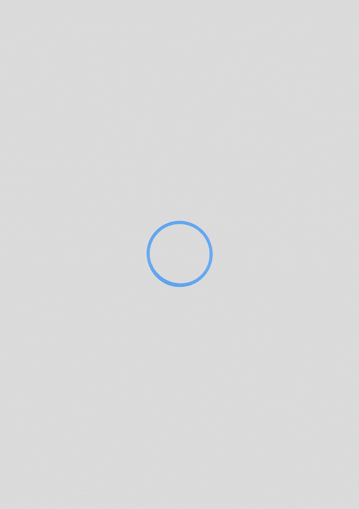

Em breve

Em breve
Criei esse site como o meu canto particular para qualquer tipo de trabalho e entretenimento já feito por mim. Sempre gostei de animações e assistia grandes influencers dessa área em 2010 até hoje. Atualmente pratico desenvolvimento web, criação de banners e cartazes, e as vezes costumo editar vídeos por diversão. Sempre estou aprimorando minhas habilidades.
Estudo violão solo. Sempre gostei das variadas sensações que a música pode trazer, até porque parte da minha infânica foi só ouvindo trilhas sonoras de games. Comecei a tocar em 2018 usando um violão abandonado no depósito do meu avô mesmo empoeirado e com o braço empenado. Sou a prova viva de que não existe isso de ter dom pra se encaixar naquilo, é preciso ter força de vontade.
Com a chegada da pandemia os meus hobbies foram se tornando mais precisos e as vezes eles mesmos tem a possibilidade fazer pessoas espairecer. Hoje também pretendo realizar serviços para as pessoas que me contatarem, como serviços para freelancer, criação de banners, edição de vídeos e até ensinar a tocar violão. Gostaria de me especializar algum dia na área de design e programação full-stack.